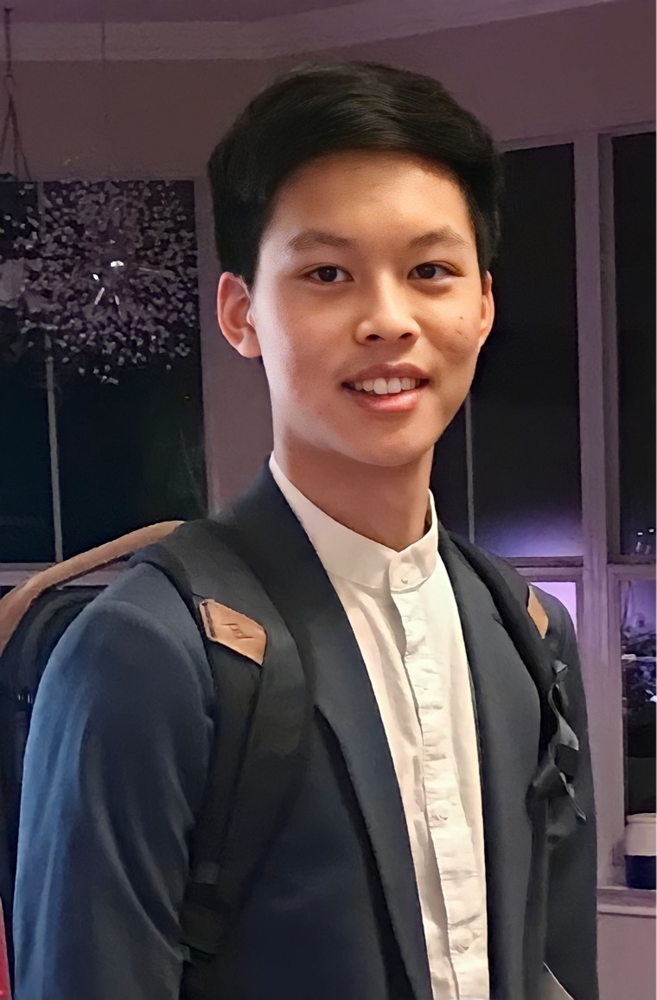

Evan Kuo
Education
University of Texas at Austin
2023 - May 2027
Bachelors of Science - Computer Science (Turing Scholars program)
Relevant Coursework: Honors (Data Structures, Discrete Math, Vector Calculus)
Skills
- Python
- PyTorch
- Matplotlib
- HTML & CSS
Projects
BWSI CogWorks at MIT
- Capstone: Developed a song identifier using Fourier transforms and spectrogram analysis with matplotlib. Designed algorithms for audio fingerprinting and peak extraction. Implemented a robust database for song metadata and fingerprints, achieving high recognition accuracy across diverse noise conditions.
- Vision Capstone: Built a facial recognition tool using pre-trained PyTorch networks. Used MTCNN for face detection and InceptionResnetV1 for face descriptors. Integrated functionality to update a database with new descriptors for unknown faces, and to cluster images based on individual faces using the Whispers Algorithm. Enhanced image processing with sci-kit image for compatibility with RGB model inputs.
- Language Capstone: Developed a semantic image search using ResNet18 descriptors for images and GloVe-200 embeddings for text with a DNN. Trained embeddings in a shared semantic space optimized with a margin ranking loss. Implemented a querying mechanism to match textual queries to images, ranking by cosine similarity.
- Package Detector: Fin-tuned an SSD Object detection model (Pytorch) and VGG 19 classification model w/ custom dataset to identify packages on a porch.
- Sleep Detector: used a pretrained facenet model and my own CNN model trained on a dataset of eye images.